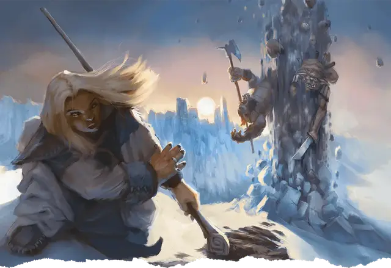

Извержение земли
Erupting Earth
3 уровень, Преобразование

Время сотворения 1 действие
Дистанция 120 футов
Компоненты В, С, М (кусочек обсидиана)
Длительность Мгновенная
Классы Волшебник, Друид, Чародей
Выберите точку на поверхности земли, видимую в пределах дистанции. В этой точке из поверхности вырывается фонтан земли и камня. Все существа в кубе с длиной ребра 20 футов с центром на этой точке должны совершить спасбросок Ловкости. При провале существо получает 3к12 дробящего урона, а при успехе — половину этого урона. Кроме того, земля в области действия заклинания становится труднопроходимой местностью, пока её не расчистят. Расчистка квадрата с длиной стороны 5 футов вручную займёт не менее 1 минуты.
На больших уровнях. Если вы накладываете это заклинание, используя ячейку 4-го уровня или выше, то урон увеличивается на 1к12 за каждый уровень ячейки выше 3-го.